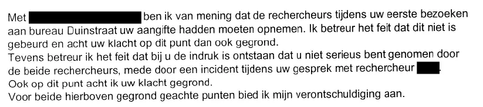

Bewijsstuk · Brief
Districtschef van politie aan Giltay, 26 maart 2000
De passage
“Met […] ben ik van mening dat de rechercheurs tijdens uw eerste bezoeken aan bureau Duinstraat uw aangifte hadden moeten opnemen. Ik betreur het feit dat dit niet is gebeurd en acht uw klacht op dit punt dan ook gegrond. Tevens betreur ik het feit dat bij u de indruk is ontstaan dat u niet serieus bent genomen door de beide rechercheurs, mede door een incident tijdens uw gesprek met rechercheur […]. Ook op dit punt acht ik uw klacht gegrond. Voor beide hierboven gegrond geachte punten bied ik mijn verontschuldiging aan.” Pagina 1, de alinea waarin de klacht gegrond wordt verklaard. De twee weglatingstekens tussen haken staan voor twee namen die in het document zijn zwartgelakt. Het briefhoofd spelt de naam van de districtschef als ‘N.. Laagland’, de ondertekening als ‘N. Laagland’.

Waarom dit document telt
Toen Giltay op advies van advocaat Gerard Spong in juli 1999 aangifte wilde doen, weigerde de Haagse politie volgens het boek (p. 70) die op te nemen. In deze brief erkent de districtschef dat de rechercheurs de aangifte hadden moeten opnemen, en dat bij Giltay de indruk was ontstaan dat hij niet serieus was genomen. Hij acht de klacht op beide punten gegrond en biedt zijn verontschuldiging aan. Pas hierna, in juni 2000, nam de Haagse politie de aangifte van smaad en laster op.
Herkomst
- Document
- Brief ter afhandeling van een klacht over politieoptreden
- Van
- N. Laagland, chef district II (Segbroek, Haagse Hout, Scheveningen), Politie Haaglanden, Den Haag
- Aan
- E.F. Giltay
- Datum
- 26 maart 2000
- Kenmerk
- 99Ro15395 van 2 september 1999
- Onderwerp
- Afhandeling klacht politieoptreden
- Verwijzingen
- Uw kenmerk: brief van 21 juli 1999
- Taal
- Nederlands
- Zie ook
- Aangifte bij de Haagse politie, 12 juni 2000
Aangehaald in: het essay ‘Het verbod viel, het boek bleef overeind’ in het hoofdstuk (3) ‘Wat het boek onthult: de Srebrenica-doofpot’.
Bewijsstukpagina: https://
Document: https://
Laatst gewijzigd 13 september 2026, geraadpleegd 3 oktober 2026.

Deze pagina is een bewijsstuk bij het boek De doofpotgeneraal van Edwin Giltay en de bijbehorende website.